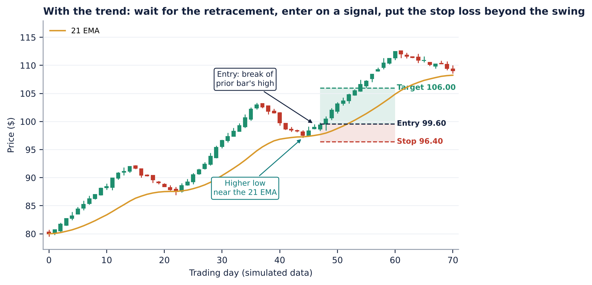

Learning objectives
- Explain what a retracement is and where it often ends.
- Combine the trend, a key level and the 21 EMA to choose a place to enter.
- Plan a trade with the trend from entry to target.
- Choose a stop loss beyond the last swing point.
Lesson
The idea
In an uptrend, price does not go straight up. It rises, retraces, and rises again. Each retracement is a chance to buy at a better price and with a closer stop loss than a chase of the breakout. The same is true in a downtrend, when price rallies and then falls again.
Where retracements end
Look for the retracement to stop at one of three places:
- a key level, especially an old resistance that has become support;
- the 21 EMA;
- the last swing low of the trend (the higher low).
The best retracements stop where two of them meet. That is confluence, and Week 11 teaches how to count it.
The plan
- Confirm the trend on the weekly chart and the daily chart.
- Wait for the retracement to reach a place from the list above.
- Wait for a signal: a pin bar, an inside bar or a fakey.
- Enter above the signal bar. Put the stop loss beyond the swing low and the target at twice the risk or more.

Figure 9.1. A higher low near the 21 EMA, then an entry above the prior bar's high.
Patience
The hard part is waiting. Price will often fall short of your place, or will not give a signal. Skipping those trades is part of the method. Good trades come to the trader who waits.
Worked example
In Figure 9.1 the trend is up with swing highs at $103 and $112.5. After the high near $103 price retraces to about $97.5, close to the 21 EMA, and a bar closes at the prior bar's high.
- Entry: $99.60.
- Stop loss: $96.40, below the swing low. Risk per share = $3.20.
- Target: $99.60 + 2 × $3.20 = $106.00.
Price later reaches the target.
Exercises
- In a downtrend, where would you look to sell?
Answer
On a rally that stops at a key level (an old support that has become resistance), at the falling 21 EMA, or at the last lower high, followed by a bearish signal. - Entry $60.00, stop loss $57.50. What is the target for a risk reward of 1:2?
Answer
Risk $2.50, so the target is $60.00 + $5.00 = $65.00.
Lab
Find two retracements on daily charts of stocks in a clear uptrend. For each, write the plan above before you look at what happened next. Then check and record the result in your journal.